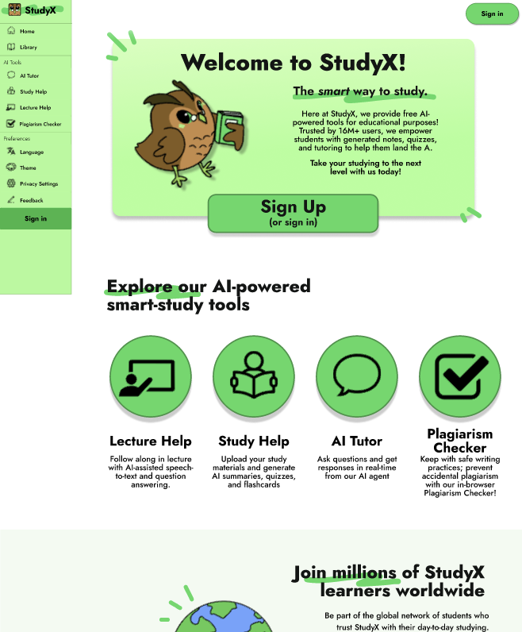

Recommendations
1. Add a clear onboarding area to the landing page
The current StudyX.ai design lacked onboarding tools, making it difficult for new users to familiarize themself with the application. As such, our redesign primarily focused on adding those onboarding tools to provide a more friendly new-user experience. Our design opts to remove the self-advertisement and payment information found on the original page and instead features a short welcome message. Panels also contain improved helper text to help users easily learn the app's functions.
Before

After

2. Simplify and group the sidebar navigation
One of the main issues with the StudyX sidebar was that the multitude of AI tools listed lacked any organization, making it difficult to spot specific features when needed. Their design uses a single header titled AI Tools, with a large spanning list, and hides other important menus at the bottom. In our redesign, we reduced the number of tools listed to avoid overloading the menu and designed the sidebar with more section headers, organizing the buttons. While this forced us to remove many of the features listed in the original app, the simpler sidebar design would allow users to find features more quickly at a glance.
Before

After

3. Show upload progress and status messages
In the current design, StudyX.ai lacked user feedback to inform users about ongoing processes and failed to provide users with any information about current progress or errors. Our new design provides this feedback through a progress bar and status text to confirm the current state of a running process.
Before

After

4. Redesign AI Tutor as an ongoing tutoring chat
StudyX.ai's current AI tutor employs a single-request system, meaning it only allows users to ask one question or upload a single document, limiting the feature's interactivity. With this system in place, the AI tutor is more of a homework solver than a tutor, which is far less effective than a regular chatbot. In our redesign, we opted to make the AI Tutor a persistent chatbot, allowing users to upload files, get questions answered, and continue chatting with the AI by asking follow-up questions or for clarifications. While this would require a move intensive AI Chatbot integration than what is currently present on the application, this allows the AI Tutor to be more responsive and help guide the user through any problems they may have, providing a much better AI Tutor.
Before

After

5. Redesign the Library for easier access and AI-assisted reuse
Previously, users struggled to use StudyX.ai's save feature, which was supposed to allow them to save previous conversations, generated documents, and uploaded documents. The issue was that the UI contained many unnecessary buttons and required manual saves, making navigation confusing and requiring extra button presses. Additionally, the directory was deceptive, with some buttons redirecting users to the normal upload page, which made users believe they were uploading their document to be saved. Our redesign makes this much clearer with a simpler interface titled Library, allowing users to more easily find their old conversations and study materials. Additionally, our program switches out manual saving for automatic saving whenever a document gets uploaded, which while more storage intensive, saves users the hassle of having to manually click to store their documents.
After

6. Shift the visual style toward an academic learning environment
In the original color scheme, StudyX.ai featured bright gradients and purple theming, which users noted made the app feel like a generic AI tool rather than a study helper. Additionally, we thought the purple color scheme was less conducive to an educational tool. For our redesign, we opted for a simpler, solid green color palette and bolder text to accentuate the idea of growth and learning. In addition, we reduced the amount of text on each page, creating a cleaner interface that allows for a more natural study flow that is easy to understand for all users.
Before

After

High Fidelity Prototype
At the following link you will find our fully interactive Figma prototype, including the redesigned landing page, sidebar, upload flow, AI Tutor chat, Library, and updated visual system.
(If the proportions or scaling look off, click
and select Fit width.)
Conclusion
While StudyX.ai had a multitude of useful features, its clunky UI and poor organization held it back from being the accessible study tool it was designed to be. StudyX.ai's ability to scan documents and generate study resources such as notes, summaries, and quizzes could provide students with a quick and easy way to study.
The most important aspect we learned about UI design and user behavior is that no matter how many complex features you implement or how many options you provide to users, if those elements are not organized and composed effectively, those features lose their value. This was the biggest issue with StudyX.ai, as despite its vast number of features, its poor UI made the site very difficult to use for many users, discouraging them from continuing to use it. Our redesign revolved around simplifying the overly complex features of StudyX.ai and instead focusing on a cleaner UI to put usability first.
For the StudyX.ai engineering team, we recommend the main features from our redesign to implement are the progress bar and simplified sidebar. The progress bar would provide users with feedback while using the site and make the website feel more responsive. However, perhaps more importantly, a simplified sidebar would greatly improve navigation across the site and help new users find the tools they need. By simplifying the overall layout and removing some of the more complex features found in StudyX.ai in favor of a cleaner design, StudyX.ai could become a much more efficient study tool, capable of aiding academics worldwide.